Home / Products
Products
28 parts in six families. Search by type of casting, or browse by industry.
28 parts
Impact crushers
Hammers, blow bars, impact plates and grizzly bars for crushers that break rock by impact.
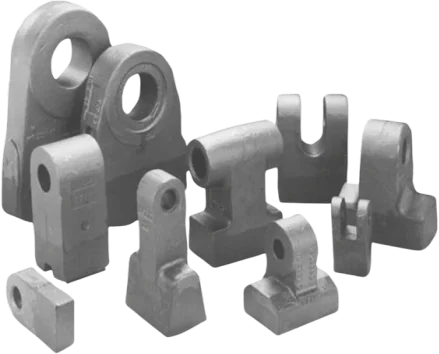
Hammers and beaters
Hammer crushers, hammer mills and impactors for limestone, coal, clinker and other medium-hard material.
Manganese steel, Cr-Mo steel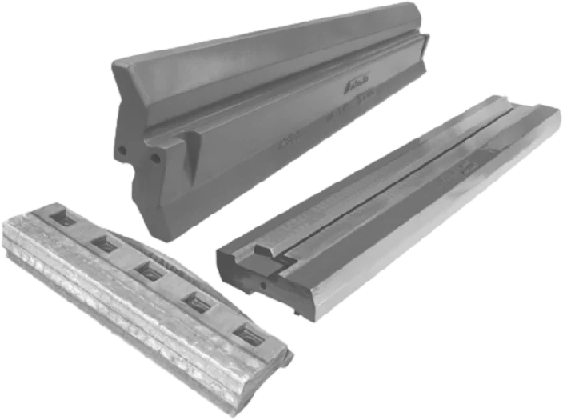
Blow bars
Rotors of horizontal-shaft impact crushers in quarries and cement plants.
Manganese steel, Cr-Mo steel, High-chromium ironImpact plates
Impact aprons and curtain liners of horizontal-shaft impact crushers.
Manganese steel, Cr-Mo steel, High-chromium iron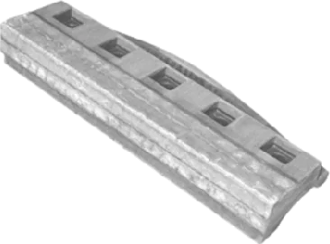
Grinding paths
The grinding path beneath the rotor of impact crushers, which adds a final crushing stage.
Cr-Mo steel, High-chromium iron, Manganese steelGrizzly bars
Vibrating grizzly feeders and scalping screens ahead of primary crushers.
Manganese steel, Cr-Mo steelJaw and cone crushers
Jaws, toggles and cone liners, plus the heads and sockets that carry them.
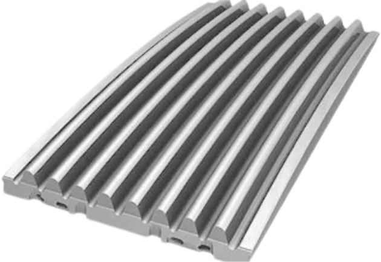
Jaw and side plates
Fixed and swing jaws and the cheek plates that protect the frame, in jaw crushers.
Manganese steelToggle plates
Toggle plates and toggle seats of jaw crushers.
Carbon or low-alloy steel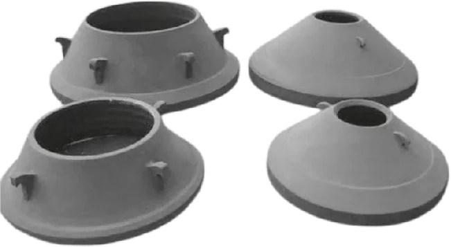
Concaves and mantles
Cone and gyratory crushers in primary, secondary and tertiary crushing.
Manganese steel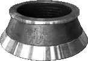
Bowl liners
The bowl of a cone crusher, opposite the mantle.
Manganese steelMill parts
Wear parts and structural castings for vertical roller mills and ball mills.
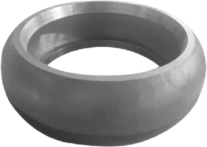
VRM rollers
Roller tyres and roller segments of vertical roller mills for raw meal, cement, slag and coal.
High-chromium iron, Ni-Hard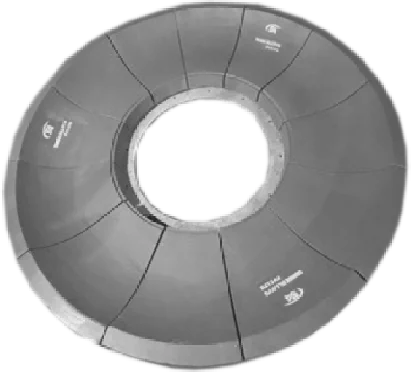
Table liners
Grinding table segments of vertical roller mills and bull ring segments of bowl mills.
High-chromium iron, Ni-Hard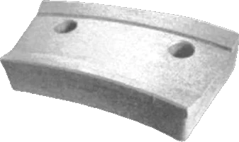
Clamps
Segment clamps and wedges that hold roller and table segments in vertical mills.
Carbon or low-alloy steel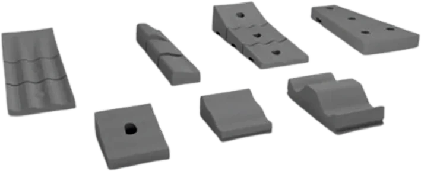
Mill liners
Shell liners, lifters and end liners of ball and tube mills grinding cement, ore and coal.
Cr-Mo steel, High-chromium iron, Ni-Hard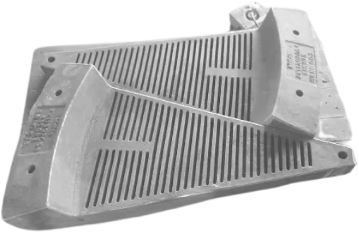
Diaphragms and discharge grates
Intermediate and outlet diaphragms of two-chamber cement mills and discharge grates of grate-discharge ball mills.
Cr-Mo steel, High-chromium iron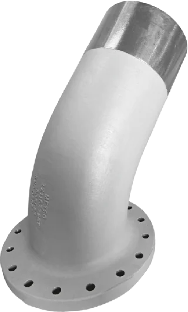
Mill feed spouts
Feed spouts that deliver clinker and additives into ball mills.
High-chromium iron, Cr-Mo steelKiln and cooler
Heat-resistant castings for the preheater, the kiln ends and the clinker cooler.
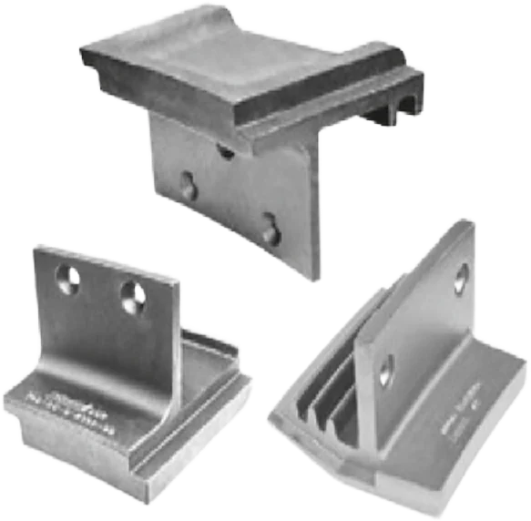
Tip castings and sectors
The kiln inlet and outlet: nose-ring tip castings, outlet sectors and inlet segments.
Heat-resistant steelBRD segments
Brick-retaining segments at the kiln ends.
Heat-resistant steel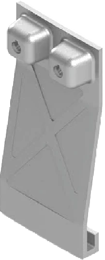
Dip tubes
Segmented dip tubes, also called vortex finders or thimbles, in preheater cyclones.
Heat-resistant steel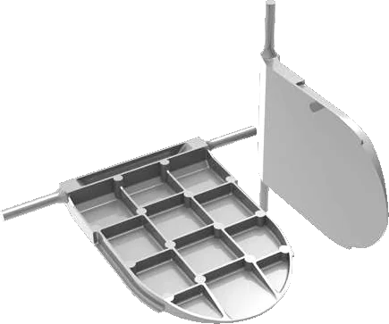
Dispersion plates
Meal dispersion and splash plates at the meal inlets of preheater riser ducts.
Heat-resistant steel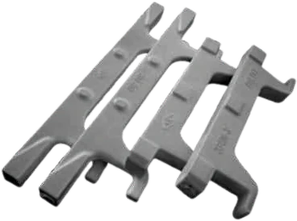
Grate bars and cross bars
Clinker coolers: grate bars and the cross bars that convey clinker in cross-bar coolers.
Heat-resistant steel, Carbon or low-alloy steel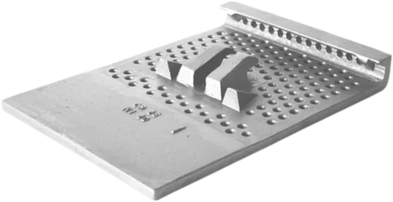
Grate and cooler plates
Grate plates of reciprocating-grate and static-inlet clinker coolers.
Heat-resistant steel, Carbon or low-alloy steel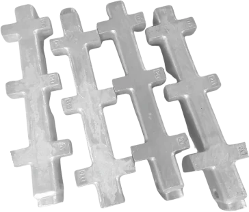
Cooler conveying elements
Clinker coolers: the cast elements that move the clinker bed along the grate.
Heat-resistant steel, Carbon or low-alloy steelCritical spares
Structural castings, feeder, track and running parts whose failure stops the plant.
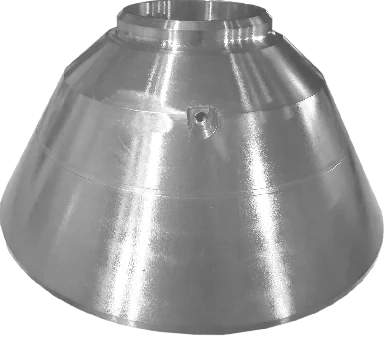
Crusher heads and sockets
Heads that carry the mantle and sockets that carry the main shaft, in cone crushers.
Carbon or low-alloy steel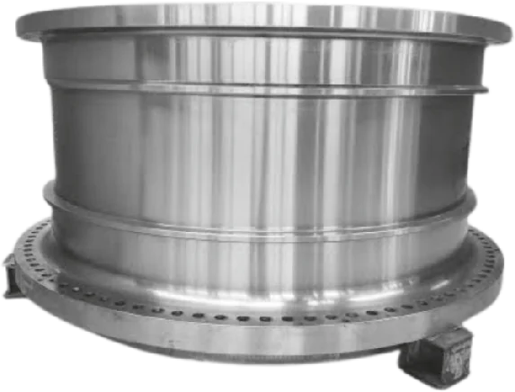
Trunnions
Feed and discharge trunnions that carry ball and tube mills on their bearings.
Carbon or low-alloy steel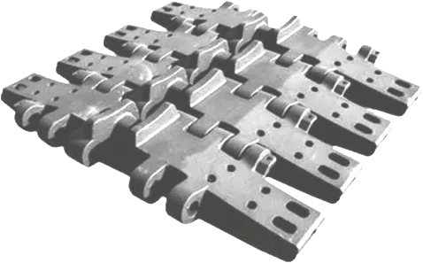
Track shoes
Crawler tracks of mining shovels, mobile crushers and other tracked machines.
Manganese steel, Carbon or low-alloy steel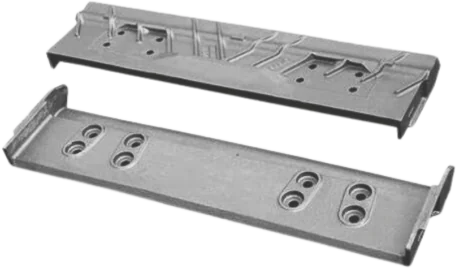
Apron pans and sprockets
Apron feeders under dump hoppers and ahead of primary crushers.
Manganese steel, Carbon or low-alloy steel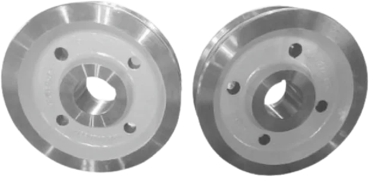
Wheels and rollers
Track wheels, idlers, rollers and similar running parts on plant and mobile equipment.
Carbon or low-alloy steelGeneral spares
Wear parts for chutes, hoppers and transfer points.
No exact match, but we probably make it
We cast to drawing, sample or sketch. Tell us the part and the equipment it fits. A metallurgist will come back to you.
Get a quote for this partYour part not listed? We cast to drawing, sample or sketch, with more than 10,000 patterns already on file.
Have a casting problem? Send it to us
A drawing, photographs of the worn part or just the equipment model: any of them is enough to start. Our metallurgists recommend the grade if you don’t know it.